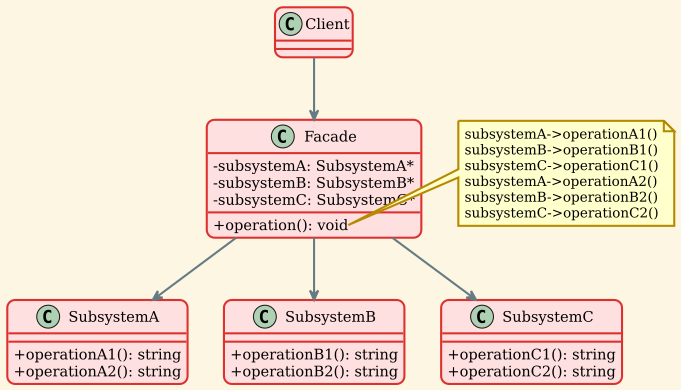

Facade Pattern¶
Intent¶
The Facade pattern provides a unified interface to a set of interfaces in a subsystem. Facade defines a higher-level interface that makes the subsystem easier to use.
Problem¶
Working with complex subsystems can be challenging:
- The subsystem contains many classes with complex interdependencies
- Clients need to understand and interact with multiple classes
- Each client must manage the initialization and coordination of subsystem components
- Changes in the subsystem can affect many clients
For example, a home theater system might have components like an amplifier, DVD player, projector, screen, and lights. To watch a movie, a client would need to: 1. Turn on the amplifier and set the volume 2. Turn on the DVD player and load the movie 3. Turn on the projector and set the input 4. Lower the screen 5. Dim the lights
This is complex and error-prone. If you forget a step or do them in the wrong order, it won't work correctly.
Solution¶
The Facade pattern suggests creating a facade class that provides a simple interface to the complex subsystem. The facade:
- Knows which subsystem classes are responsible for a request
- Delegates client requests to appropriate subsystem objects
- Provides simple methods that combine multiple subsystem operations
- Doesn't prevent clients from accessing subsystem classes directly if needed
Structure¶

Participants¶
- Facade
- Knows which subsystem classes are responsible for a request
- Delegates client requests to appropriate subsystem objects
- Provides convenient methods that combine subsystem operations
- In our example:
Facadeclass withoperation()andanotherOperation()
- Subsystem Classes
- Implement subsystem functionality
- Handle work assigned by the Facade
- Have no knowledge of the facade (no reference to it)
- In our example:
SubsystemA,SubsystemB,SubsystemC
- Client - Uses the Facade instead of subsystem objects directly - Can still access subsystem classes if needed - Simplified interaction with complex subsystem
Implementation¶
Subsystem Classes¶
Facade Class¶
Usage Example¶
Applicability¶
Use the Facade pattern when:
- You want to provide a simple interface to a complex subsystem - Most clients need only a subset of subsystem features - Facade provides simple defaults for common use cases - Example: Compiler facade hiding scanner, parser, code generator
- There are many dependencies between clients and implementation classes - Facade decouples subsystem from clients - Changes to subsystem don't affect clients - Example: Database access layer hiding connection pooling, caching
- You want to layer your subsystems - Use facades to define entry points to each subsystem level - Subsystems communicate only through facades - Example: Network protocol layers, each with a facade
- You want to wrap a poorly designed collection of APIs with a single well-designed API - Legacy code integration - Third-party library wrapper - Example: Wrapping complex graphics libraries
Consequences¶
Benefits¶
-
Simplified interface - Hides complexity of subsystem from clients - Provides convenient methods for common operations - Reduces learning curve for subsystem usage
-
Decoupling - Shields clients from subsystem components - Reduces dependencies between clients and subsystem - Changes to subsystem don't affect clients using the facade
-
Layering - Helps organize code into layers - Each layer has a facade defining its interface - Promotes good architecture
-
Flexibility - Clients can still access subsystem classes directly if needed - Facade doesn't prevent advanced usage - Can create multiple facades for different use cases
Drawbacks¶
-
God object risk - Facade can become too large and complex - May try to do too much - Should focus on simplifying, not adding business logic
-
Limited functionality - Facade may not expose all subsystem features - Advanced users may need to bypass facade - Need to balance simplicity with completeness
-
Additional layer - Adds one more layer of abstraction - May impact performance slightly - Usually negligible overhead
Facade vs Similar Patterns¶
Facade vs Adapter¶
| Aspect | Facade | Adapter |
|---|---|---|
| Intent | Simplify interface (optional simpler interface) | Make incompatible interfaces compatible |
| Interface | New, simplified interface | Adapts to specific target interface |
| Subsystems | Works with multiple subsystems | Typically wraps single class |
| Knowledge | Knows about all subsystems | Knows about adaptee |
Facade vs Mediator¶
| Aspect | Facade | Mediator |
|---|---|---|
| Intent | Simplify subsystem interface | Coordinate communication between objects |
| Direction | Unidirectional (client → facade → subsystems) | Bidirectional (colleagues ↔ mediator) |
| Awareness | Subsystems don't know about facade | Colleagues know about mediator |
| Purpose | Simplification | Decoupling communication |
Facade vs Abstract Factory¶
| Aspect | Facade | Abstract Factory |
|---|---|---|
| Intent | Simplify subsystem usage | Create families of related objects |
| Focus | Simplifying interface | Creating objects |
| Use together | Facade can use Abstract Factory to create subsystem objects | - |
Real-world Examples¶
-
Home Theater System - Subsystems: Amplifier, DVDPlayer, Projector, Screen, Lights - Facade methods:
watchMovie(),endMovie()- Simplifies: Turn on all components in correct order with correct settings -
Compiler - Subsystems: Scanner, Parser, Optimizer, CodeGenerator - Facade method:
compile(sourceFile, outputFile)- Simplifies: Orchestrates entire compilation pipeline -
Online Shopping - Subsystems: Inventory, Payment, Shipping, Notification - Facade method:
placeOrder(product, paymentInfo, address)- Simplifies: Coordinates all steps of order processing -
Database Access - Subsystems: Connection pool, Query builder, Cache, Transaction manager - Facade methods:
query(),save(),delete()- Simplifies: Hides connection management, caching, transactions -
Operating System APIs - Subsystems: File system, Memory management, Process management - Facade: High-level OS API - Simplifies: System calls, resource management
-
Graphics Libraries - Subsystems: Renderer, Texture manager, Shader compiler, Buffer manager - Facade methods:
drawSprite(),drawText()- Simplifies: Complex GPU operations
Implementation Considerations¶
1. Reducing Client-Subsystem Coupling¶
Minimize what clients need to know:
2. Public vs Private Subsystem Classes¶
Consider making subsystem classes private or in an internal namespace:
3. Optional Facade¶
Facade is optional - clients can still access subsystems:
4. Creating Subsystem Objects¶
Facade can: - Create subsystem objects itself (default) - Accept subsystem objects from client (dependency injection) - Use Abstract Factory to create subsystems
5. One or More Facades¶
Can have multiple facades for: - Different client needs (simple vs advanced) - Different use cases - Different abstraction levels
6. Abstract Facade¶
For multiple implementations:
Sample Output¶
Key Takeaways¶
- Facade provides a simplified interface to a complex subsystem
- Reduces dependencies between clients and subsystem implementation
- Doesn't prevent clients from accessing subsystem classes directly
- Helps organize code into layers with clear boundaries
- Commonly used to wrap complex libraries or legacy code
- Can have multiple facades for different purposes
- Subsystems are unaware of the facade
- Focuses on simplifying usage, not adding business logic
- Different from Adapter (which makes incompatible interfaces work) and Mediator (which coordinates communication)
- Essential for maintaining clean architecture and reducing coupling